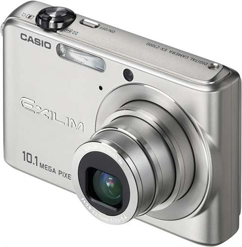
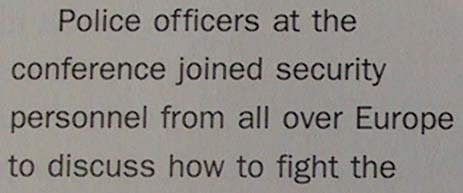
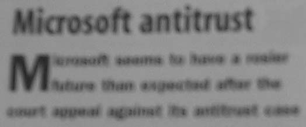
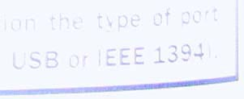

Tweet
Tweet
We already mentioned that you can convert snapshots taken with a (digital) photo camera or smartphone into editable text. Yes, you can act like James Bond at the local library and recognize the pictures later on at home…

The snapshots generated with a (digital) camera are usually JPEG or TIFF images, and your OCR software should have no trouble to open them. Limit yourself to no or small JPEG compression — important compression reduces the sharpness of the captured text!
That doesn’t mean it always works. There are a number of specific issues that relate to digital cameras.
The resolution of digital cameras and of the cameras built into smartphones has increased many times over the years. The oldest cameras (with a 2 MP resolution) produce images of, say, 1,100 x 850 pixels; recent digital cameras (with a 12 MP resolution) generate images of for instance 4,000 x 3,000 pixels. (With digital cameras, a fixed grid of photosensitive cells generates the image. You get the smaller images when the data from some sensors on the CCD array are discarded.)
We also know that good recognition requires an image resolution of 300 dpi — and “dpi” means dot per inch! In other words, the older digital cameras typically produce images with a significantly lower resolution — even when you hold the camera close to the document! In any case, select the highest available image resolution. Create for instance 2,600 x 2,000 size images with a 5 MP camera that also supports 2,100 x 1,550 and 1,600 x 1,200 size images. (All recent digital cameras offer a resolution of 10 to 12 MP, the resolution shouldn’t be a problem…)
There are a number of “scanning tips” you can take into account to produce good results with your digital snapshots.
Enable the “macro” mode of your camera to take closeups — which is always the case when you photograph documents. (This mode was designed to capture flowers, insects etc.) Otherwise, the images are unsharp and illegible.
 
Hold the camera directly above the document to avoid capturing the document at an angle. However, avoid shadows cast on the document by the camera or your hand! Produce stable images. Consider mounting your camera on a tripod when necessary. Zoom manually to crop your document. (Some cameras are bundled with photo stitching software, but don’t bother using it for document capture.)
Disable the flash when you’re filming glossy paper, otherwise the image may be too light. Adapt the brightness and contrast to the environment — day light, lamp light, neon light etc. Calibrate the camera by filming a white document.

Use the optical zoom but don’t zoom digitally. Digital zooms are to digital cameras what interpolated resolutions are to scanners! When the optical zoom is used, the lens magnifies the image. As a result, the image quality is improved. Digital zooming reduces the resolution and quality of an image: interpolation techniques are applied to artificially add “fake” pixels to the actual snapshot!
Limit yourself to no or small compression — important compression reduces the sharpness of the captured text.
Training the system further — The accuracy of OCR software — How good are your scanning skills? — With a little help from the friends — Recognizing snapshots — Recognizing prescanned images and faxes — Repurposing PDF files
Home page — Intro — Scanners — Images — History — OCR — Languages — Accuracy — Output — BCR — Pen scanners — Sitemap — Search — Contact – Feedback